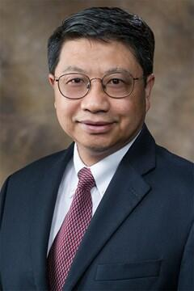

报告题目1：(待定)
报告时间：(待定)
报告人：Prof. Xiaoqing(Frank) Liu
摘要：(待定)
简历：
Prof. Xiaoqing(Frank) Liu is currently a professor and department head and holds the Rodger S. Kline endowed leadership chair in the Department of Computer Science and Computer Engineering, at the University of Arkansas in Fayetteville, USA, a flagship campus in the University of Arkansas System. His current interests include service computing, software engineering, web-based argumentation, and intelligent systems. He was a principal investigator, co-principal investigator, or faculty participant of externally funded grants of more than $7M from reputable funding agencies and corporations in industry in the US and Japan. He is serving as a chair of program committee on 2017 IEEE International Conference on Services Computing. He also served as a chair of program committee of IEEE International on Computer Software and Applications in 2008, and chair of technical committee of International Conference on Collaboration Technologies and Systems five times from 2011 to 2015. He published more than 140 referred papers in numerous journals and conferences, such as ACM Transactions on Web, IEEE Transactions on Services Computing, Software Quality Journal, Journal of Software Process: Improvement and Practice, IEEE International Conference on Software Engineering, IEEE International Conference on Web Services, IEEE International Conference on Service Computing, and ACM Conference on Computer-Supported Cooperative Work. He received his PhD in computer science from the Texas A&M University in College Station in 1995.
2017年第八届中国计算机学会服务计算学术会议(NCSC2017)
主题报告